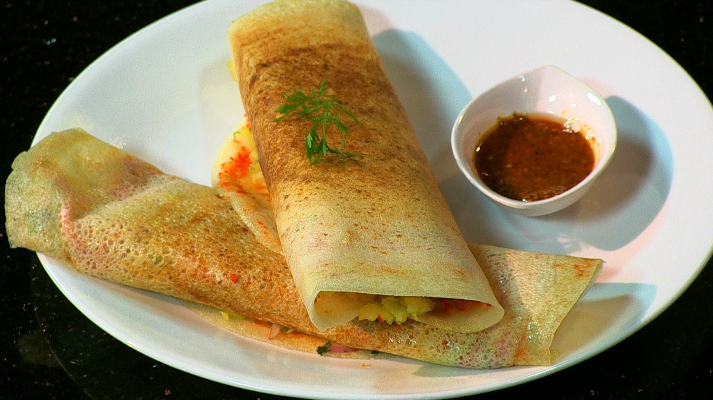

The foodHub Reataurant Most Beautiful Gallery Enjoy
For now, feast your eyes and control your drooling, as we reveal the world's best foods:
You see it folded around melon, wrapped around grissini, placed over pizza, heaped over salad. There’s good reason for that: these salty, paper-thin slices of air-dried ham lift the taste of everything they accompany to a higher level, following the same theory as the Italian guy who thinks carrying around a copy of “Candide” makes up for the tiny Speedos.
OUR CHEFS
-

Mr.Jhon
It makes me fell great every time I use it to lose weight. Customer service is very good and the diet helps me feel happy and have more energy It makes me fell great every time I use it to lose weight. Customer service is very good and the diet helps me feel happy and have more energy It makes me fell great every time I use it to lose weight. It makes me fell great every time I use it to lose weight. Customer service is very good and the diet helps me feel happy and have more energy It makes me fell great every time I use it to lose weight.
-
Mr. Michel dou
It makes me fell great every time I use it to lose weight. Customer service is very good and the diet helps me feel happy and have more energy It makes me fell great every time I use it to lose weight. Customer service is very good and the diet helps me feel happy and have more energy It makes me fell great every time I use it to lose weight. It makes me fell great every time I use it to lose weight. Customer service is very good and the diet helps me feel happy and have more energy It makes me fell great every time I use it to lose weight.
GALLERY
most beautifully design food
-
The Munchies
Smoking pot and bracing for the munchies go hand in hand. In fact, if you want to have a great 420 time, it goes without saying that you need to ensure you’ve stocked up on snacks or that your fridge is well loaded. For most potheads, the munchies are just but a part of the whole experience. However, have you ever asked yourself just why the munchies occur.
the Medifast Diet Plan
It makes me fell great every time I use it to lose weight. Customer service is very good and the diet helps me feel happy and have more energy It makes me fell great every time I use it to lose weight. Customer service is very good and the diet helps me feel happy and have more energy It makes me fell great every time I use it to lose weight.

Kids’ Meal
high heat cooking methods like stir frying it is especially important to use oils with high smoke points that won’t break down and become harmful at high temperaturehigh heat cooking methods like stir frying it is especially important to use oils with high smoke points that won’t break down and become harmful at high temperature
yummy food
-

hamburgers
A hamburger is a sandwich consisting of a cooked patty of ground meat usually placed inside a sliced bread roll. Hamburgers are often served with lettuce, bacon, tomato, onion, pickles, cheese, and condiments such as mustard, mayonnaise, ketchup, and relish.[1] There are many types of hamburgers with significant variations.

Salmon burger
A salmon burger is a type of fishcake made mostly from salmon in the style of a hamburger. The salmon requires a binder to make it stick together and is easy to overcook which makes it too dry.Salmon burgers are especially common in Alaska where they are routinely offered as an alternative to beef hamburgers.

Pizza
potrawa kuchni włoskiej, obecnie szeroko rozpowszechniona na całym świecie. Jest to płaski placek z ciasta drożdżowego (focaccia), posmarowany sosem pomidorowym, posypany tartym serem mozzarella i ziołami, pieczony w bardzo mocno nagrzanym piecu. Pizzę podaje się na gorąco, lecz rozpowszechnione jest jedzenie jej również na zimno.
most beautifully design food
-

Dosa
Dosa is a type of pancake from the Indian subcontinent, made from a fermented batter. It is somewhat similar to a crepe but its main ingredients are rice and black gram. Dosa is a typical part of the South Indian diet and popular all over the Indian subcontinent. Traditionally, Dosa is served hot along with sambar, stuffing of potatoes or paneer and chutney. It can be consumed with idli podi as well.

Paneer
Paneer (pronounced is a fresh cheese common in South Asia, especially in Indian, Pakistani, Afghan, Nepali, Sri Lankan, and Bangladeshi cuisines. It is an unaged, acid-set, non-melting farmer cheese or curd cheese made by curdling heated milk with lemon juice, vinegar, or any other food acids. Its crumbly and moist form is called chhena in eastern India and in Bangladesh.
Sukhdi
SUKHDI also know as GORPAPDI (Gor means jaggery and papdi means a thin layer) is a fudge from Gujarat. Since the bygone days Sukhdi performs the role of an energy bar and holds a prominent place in our state's food-scape. It's an 'all in one' meal/ food sometimes compensating the need to Dal-Roti-Subzi!! A small square of this sweet is enough to keep the hunger pangs at bay for a couple of hours.
CONTACT US